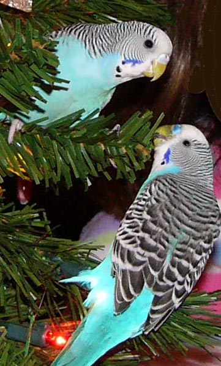

Matriklinumber 191754TAF
Link ttu leheleParrots are popular pets due to their intelligence, sociability and ability to mimic human speech. There are many different species of parrots people keep as pets. This is a summary table of the most commonly kept pet parrot species with photos and reasons for their popularity.
Species |
Image |
Description |
|---|---|---|
| African Grey | Highly intelligent parrots that can learn to mimic human speech. |
|
| Budgie |  | Small, sociable parrots that can learn to speak. |
| Macaw | Large, colorful and sociable birds that can live up to 50 years. |
|
| Cockatoo | Affectionate, energetic and curious birds. They love music and dancing. |
|
| Amazon parrot | Colorful, intelligent birds that can learn to speak and sing a lot. |